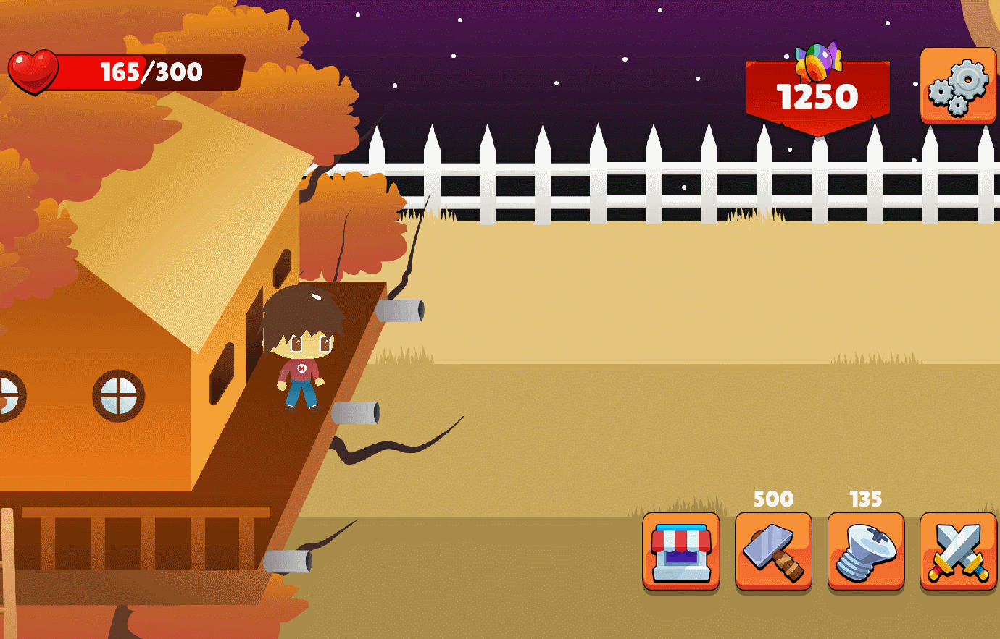
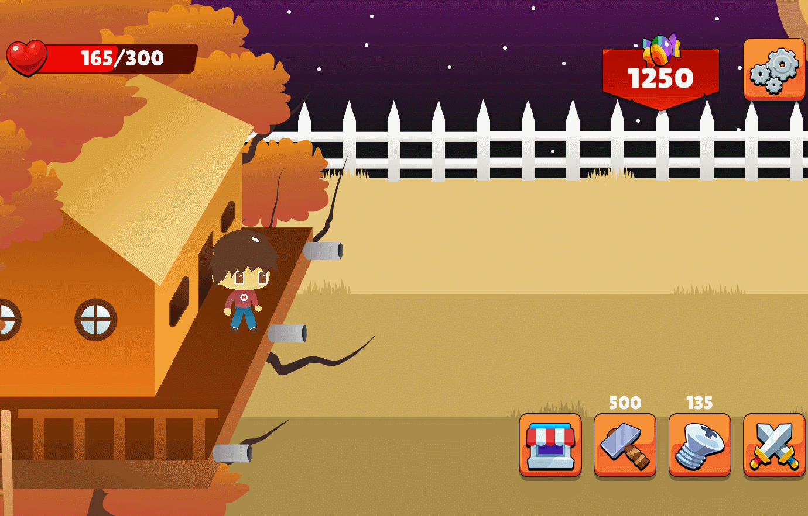

Golden pumpkin
In October 2021, we had two weeks to realise a video game on the theme of Halloween. The first week, as we were building the foundations of our game, we learned the basics of UML modelisation (in our case, how to conceive class diagrams, transition state diagrams). This game was made on Unity. We were five per groups and I was mainly focusing on the C# development.
Now imagine yourself on the evening of Halloween in a small town that every year organise a contest for the kid with the most sweets in the city (winner's price being a beautiful golden pumpkin). As the dignified heir of your grandmother, ten times winner in her youth, you need to be the best.
 


Golden Pumpkin is a tower-defense game that alterns between two phases, one where you can spend sweets to upgrade your hut or buy special attack and the other where you need to resist the ennemies assault (other children are trying to steal your treasure !).
This game is available on android, windows and mac if you want to try it !
Discover the game